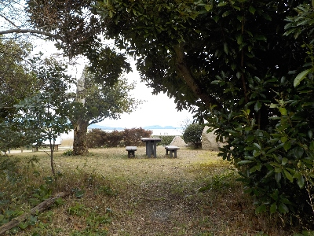
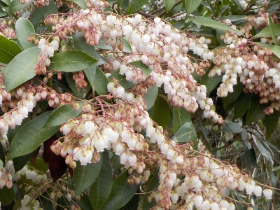
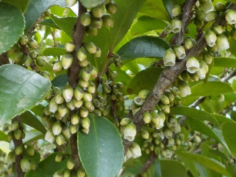
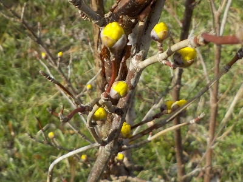
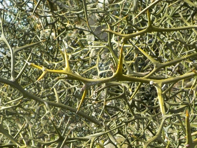
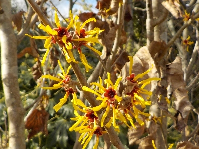
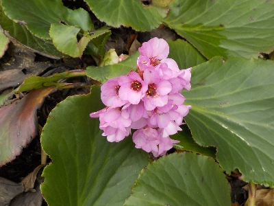

宍道湖グリーンパークに植物を見に行きました。
2024/02/25

グリーンパークには色々な木があるので、ここだったら春の花が見れるだろうと行きました。

アセビです。

ヒサカキです。

ロウバイはもう終わりかけで、次はこのサンシュが咲きそうです。

カラタチを初めて見ました。もの凄いトゲトゲですね。

マンサクです。

ヒマラヤユキノシタです。キレイですね。家の庭に植えたいって思いました。ホームセンターで販売しているかな?。
グリーンパークの木にはネームプレートが付いているものが多く、植物に詳しくなくても楽しく見れました。